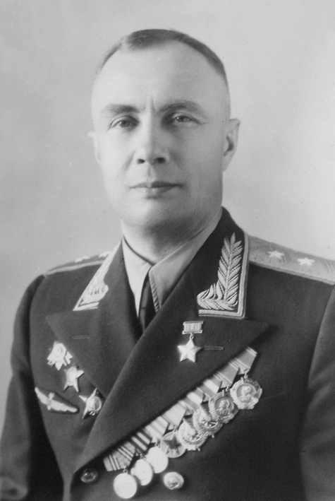

Александр Васильевич Беляков
21 декабря 1897 - 28 ноября 1982
Аудитория 212
Открыта 18 декабря 2017 года
21 декабря 1897 - 28 ноября 1982
Открыта 18 декабря 2017 года
Александр Васильевич Беляков родился Ильинской волости Богородицкого уезда Московской губернии в семье сельского учителя.
С 1908 по 1915 гг. Александр Беляков обучался в Рязанской 1-ой мужской гимназии.
В 1915 году Александр Васильевич сдал выпускные экзамены на аттестат зрелости с серебряной медалью.
Об авиации А.В. Беляков тогда и не мечтал. И стал бы он лесничим, если бы не война.
В 1916 году Беляков был досрочно принят на военную службу. В 1920 году командование направляет Белякова в Москву на учебу в аэросъёмочно-фотограмметрическую школу ВВС Красной армии.
С 1930 года А.В. Беляков стал преподавателем аэронавигации в Военно-Воздушной академии имени Жуковского, а затем начальником кафедры штурманской службы.
В 1934 году Беляков познакомился с Георгием Филипповичем Байдуковым во время перелета групп тяжелых самолетов во Францию. А другого члена будущего экипажа - Валерия Павловича Чкалова - он увидел ещё в октябре 1925 года, когда о Чкалове уже ходили легенды.
Полет был совершен в июле 1936 года. Самолет пролетел без посадки по трассе Москва - Кольский п-ов - о. Виктория - Земля Франца Иосифа - Северная Земля -побережье п-ова Таймыр - устье р. Лены - Якутия - Петропавловск Камчатский - о. Удд за 56 часов 20 минут, преодолев 9374 км. За этот перелет постановлением ЦИК СССР летчики были награждены орденом Ленина, и им было присвоено звание Героев Советского Союза. Золотых звезд Героя тогда еще не было. Через несколько лет, когда по предложению Жданова был учрежден особый знак отличия для Героев Советского Союза, А.В.Белякову вручили Золотую звезду № 9.
На рассвете 18 июня 1937 г. в 4 час. 04 мин. краснокрылатый АНТ-25 стартовал со Щелковского аэродрома близ Москвы. Самолет взял курс по маршруту: Москва - через Белое море - Кольский п-ов - Земля Франца Иосифа - Северный полюс - и дальше через Северный Ледовитый океан в Северную Америку. Полет из Москвы в Ванкувер занял 63 часа 16 минут.
Вскоре началась Великая Отечественная война.
А.В. Беляков сформировал Рязанскую школу штурманов ВВС и, являясь её начальником до начала 1945 года, готовил и выпускал для авиации дальнего действия ночные экипажи. Затем участвовал в Берлинской операции.
После войны Беляков вернулся в Военно-Воздушную академию и руководил штурманским факультетом до начала 1960 года, до момента ухода в отставку